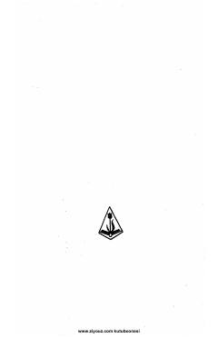

A6Muhammad Rizo Ogahiy asarlarining VI jildidagi mumtoz she'riy meros.
Mazkur kitob o'zbek mumtoz adabiyotining yirik namoyandasi Muhammad Rizo Ogahiyning asarlar to'plamining VI jildi bo'lib, uning devon va she'riy merosini o'z ichiga oladi. Nashr G'afur G'ulom nomidagi adabiyot va san'at nashriyotida 1971 yilda chop etilgan.